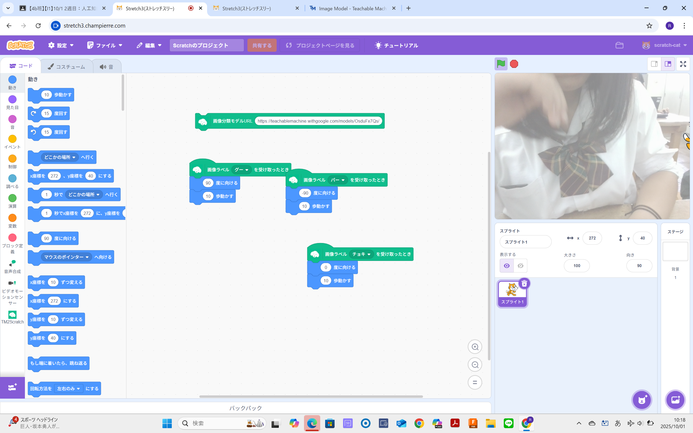
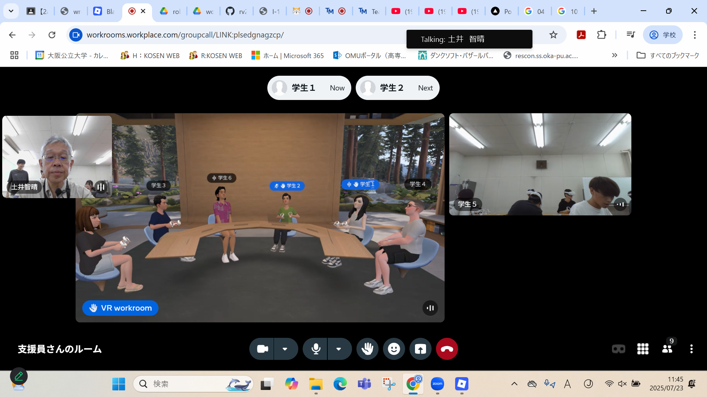
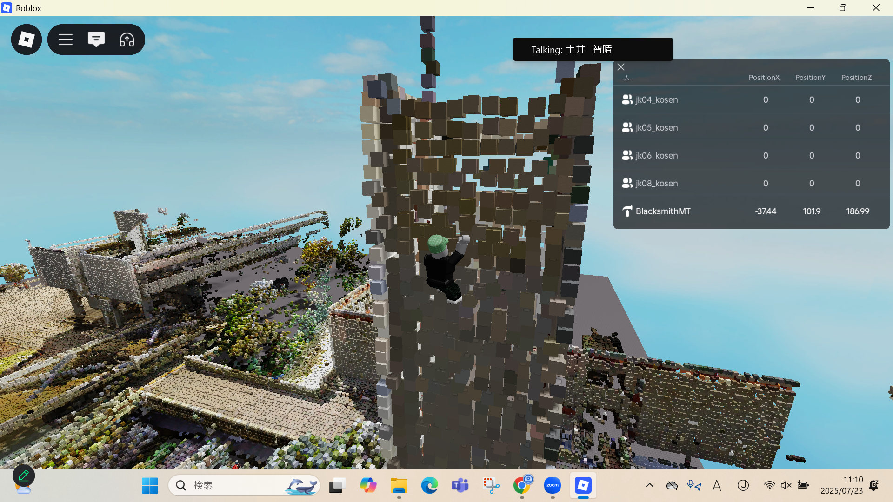

第2週目
2-1 2週目のレポートをHTMLで作る
1.内容
人工知能がどのように学習するのか、Teachable Machineやプログラミングを通して学習した。また、
VR体験で実際に作成された世界を見ることで、仮想空間に対してイメージすることができた。
2.感想
AIの構造について関心を持つ事が出来た。また高専祭で先輩がジェットコースターの仮想空間
を作ってたようにいつかは自らで仮想空間を作りたいなと感じた。
3. 2週目が完成した人は1週目のレポートも完成させる
2-2 機械学習体験

1.内容
Teachable Machineやscratchを利用し、AIによる画像の分類のプロセスやAIの構造について学習した。
2.感想
Aiの学習についてあまり考えたことななくて、ただ聞かれたことを検索して要約しているだけと感じていた。
しかし今回の学習を通して、AIは様々なパターンの結果を学習してそれと一致するものを探すような構造になっていると理解した。
2-3 VR（バーチャルリアリティー：Virtual Reality）の体験


1.内容
実際にVRの体験をすることにより、VRがどのようなものなのかを学習した。またオンライン会議などの実際の実用例も知る事が出来た。
2.感想
平面で１つ１つの点をプログラムするなら、仮想空間で３次元になった時に多くの平面が必要となるので苦労しそうだなと感じた。